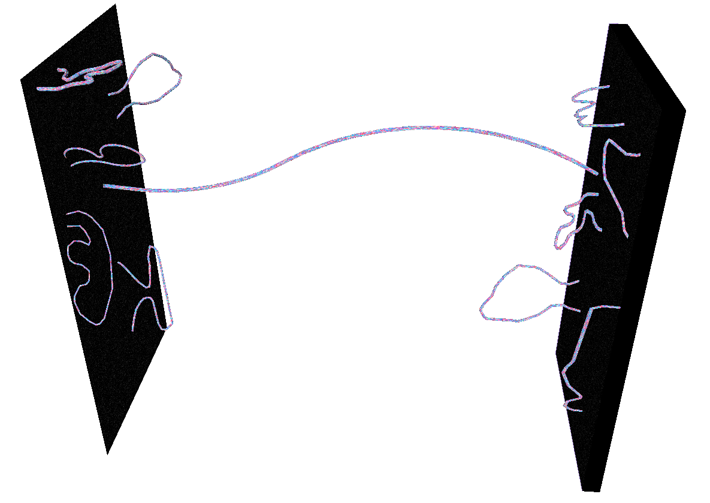
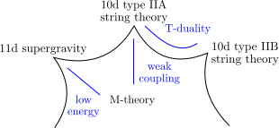
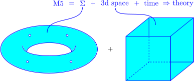
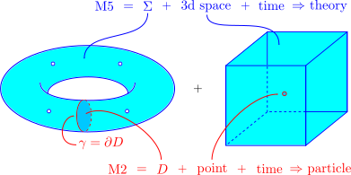
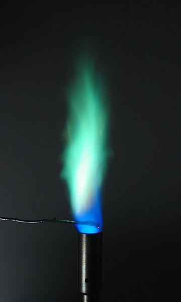
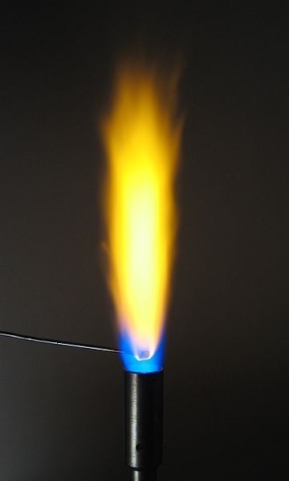
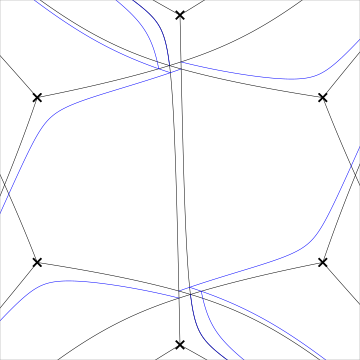
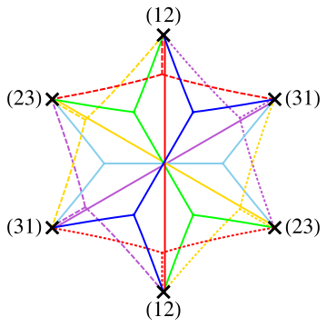
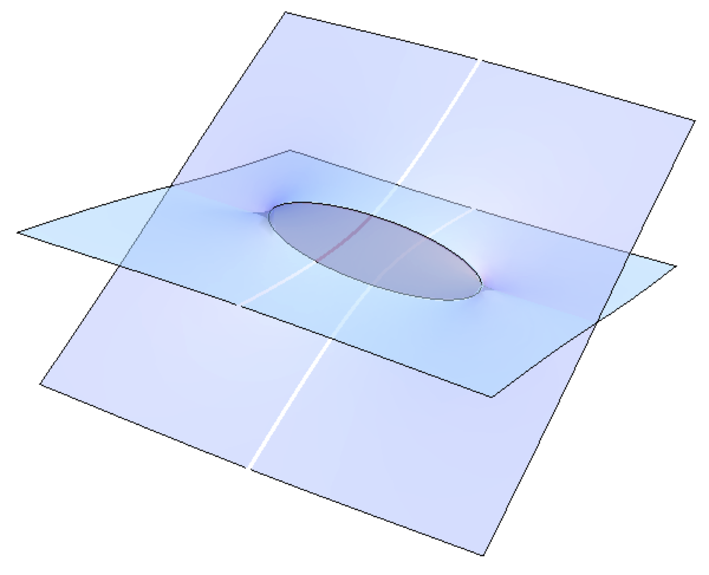

A String Theorist's Journey
with Python
Chan Y. Park
New High Energy Theory Center, Rutgers University
Jul. 14, 2016 @ SciPy
Outline
- Crash course: string theory
- From a physics problem to a computational task
- How I built $\texttt{loom}$ with Python
Goal
- Illustrate how Python is integrated throughout the progress of this project
- to Python programmers and developers who want to know how a math-oriented theoretical physicist use Python, and
- to scientists who are interested in using Python but have difficulty in figuring out where and how to start
What is string theory?
- High-energy theory, more commonly known as theoretical particle physics, is a study to understand fundamental forces of nature.
- It includes string theory, which is an effort to build a physical and mathematical framework to describe the fundamental forces in a unified way.
Why computational analysis in string theory?

- String theorists search for mathematical and exact answers.
- However, many problems in string theory pose significant challenges to a traditional pen-and-paper approach.
- We tackle such a problem by using computational method, which gives us hints toward the formulation of a complete answer.
- Recent progress in both hardware and software of computational tools enabled us to study physical and mathematical problems by combining analytical and numerical methods together.
String theory and M-theory
- M-theory is a prospective theory of quantum gravity that lives in an 11-dimensional spacetime.
- 10-dimensional string theories and 11-dimensional supergravity are believed to be different limits of M-theory.
M-branes
- M-theory has a higher-dimensional analogue of electromagnetic field.
- M-theory has two kinds of extended objects, M2-branes and M5-branes, that couple to the field electrically and magnetically, respectively.
- An M$p$-brane spans a $(p+1)$-dimensional spacetime.
- They saturate an inequality1, \[ M \geq \left| Z \right|, \] where $M$ is the mass and $Z$ is the central charge of the object.
[1] Bogomolny-Prasad-Sommerfield (BPS) bound
Supersymmetric gauge theory from M5-branes
- When we wrap \( N \) M5-branes on a punctured Riemann surface \(C\), we obtain a 4d superysymmetric gauge theory1. [Gaiotto (2009)], [Gaiotto, Moore, Neitzke (2009)]
- The M5-branes merge2 into a single M5-brane wrapping a surface3 \( \Sigma \),
$$\begin{align} f(z, x)=0,\ z \in C, \label{eq:SW_curve} \end{align}$$which is a multi-sheeted cover \(\{ x_{i = 1, \ldots, N} \}\) over \(C\).
- \( \Sigma \) determines the low-energy physics of the theory. [Seiberg, Witten (1994)]
[1] \(\mathcal{N}=2\) \( \mathrm{SU}(N) \) theory of class S
[2] in the Coulomb branch of a class S theory
[3] a complex 1-dimensional curve called a Seiberg-Witten curve
Supersymmetric particles from M2-branes
- A particle1 of the theory is identified with an M2-brane ending along a closed curve2 \(\gamma\) on \(\Sigma\). [Henningson, Yi (1997)], [Mikhailov (1997)]
- Its mass is given by integrating a differential 1-form3 $\lambda = x\, \mathrm{d} z$ along \(\gamma\), \[ M = |Z|,\ Z = \oint_\gamma \lambda. \]
[1] a BPS state
[2] $\gamma \in H_1(\Sigma; \mathbb{Z})$
[3] Seiberg-Witten differential
Spectral network
- The boundary of such an M2-brane satisfies a differential equation
$$\begin{align} \frac{\partial}{\partial t} \left( \lambda_{j} - \lambda_{k} \right)= \left( x_j(z) - x_k(z) \right) \frac{\partial z}{\partial t} = e^{i \theta},\label{eq:class_S_diff_eq} \end{align}$$where $t$ is a real parameter along $\gamma$, $\lambda_i = x_i\, \mathrm{d}z$ is the value of $\lambda$ on the $i$-th sheet, and $\theta= \arg(Z)$. [Klemm, Lerche, Mayr, Vafa, Warner (1996)]
- Extending the previous construction, we consider a set of curves on $C$ that are the solutions of ($\ref{eq:class_S_diff_eq}$) for a fixed $\theta$, which is called a spectral network1. [Gaiotto, Moore, Neitzke (2012)]
[1] of the class $\mathcal{S}$ theory determined by $f(z, x)$
Spectroscopy we learned at high school
- A flame test is a qualitative method to identify an element.

Cu
Na - An emission spectrum is used to quantitatively distinguish different elements.
Cu
Na
Supersymmetric spectroscopy
via spectral network

spectral network

particles

central charges
- Using spectral networks, we can find the particle1 spectrum of a given supersymmetric theory2.
- We use the spectrum to identify what the theory is, which is useful when the theory is strongly coupled and we lack any perturbative method to understand it.
[1] two-way streets of finite $\mathcal{S}$-walls corresponding to BPS states
[2] the BPS spectrum of a 4d $\mathcal{N} = 2$ theory of class $\mathcal{S}$ on the Coulomb branch
Examples of spectral networks from $\texttt{loom}$
From a physics problem to a computational task
- For a fixed value of $\theta$,
- Find branch points of $f(x, z) = 0$ on the $z$-plane.
- For a fixed value of $\theta$,
- Find branch points of $f(x, z) = 0$ on the $z$-plane.
- Plot curves1 from the branch points by solving the differential equation (\ref{eq:class_S_diff_eq}).
[1] $\mathcal{S}$-walls
- For a fixed value of $\theta$,
- Find branch points of $f(x, z) = 0$ on the $z$-plane.
- Plot curves1 from the branch points by solving the differential equation (\ref{eq:class_S_diff_eq}).
- Find intersections of the curves, and when the curves satisfy a certain condition2, plot a curve from the intersection according to (\ref{eq:class_S_diff_eq}).
[1] $\mathcal{S}$-walls
[2] roots of the $\mathcal{S}$-walls sum up to another root of the Lie algebra associated to the theory of class $\mathcal{S}$
- For a fixed value of $\theta$,
- Find branch points of $f(x, z) = 0$ on the $z$-plane.
- Plot curves1 from the branch points by solving the differential equation (\ref{eq:class_S_diff_eq}).
- Find intersections of the curves, and when the curves satisfy a certain condition2, plot a curve from the intersection according to (\ref{eq:class_S_diff_eq}).
- Find intersections from the newly grown curves and repeat the process.
[1] $\mathcal{S}$-walls
[2] roots of the $\mathcal{S}$-walls sum up to another root of the Lie algebra associated to the theory of class $\mathcal{S}$
- For a fixed value of $\theta$,
- Find branch points of $f(x, z) = 0$ on the $z$-plane.
- Plot curves1 from the branch points by solving the differential equation (\ref{eq:class_S_diff_eq}).
- Find intersections of the curves, and when the curves satisfy a certain condition2, plot a curve from the intersection according to (\ref{eq:class_S_diff_eq}).
- Find intersections from the newly grown curves and repeat the process.
- The set of curves obtained this way is a spectral network $\mathcal{W}_\theta$.
[1] $\mathcal{S}$-walls
[2] roots of the $\mathcal{S}$-walls sum up to another root of the Lie algebra associated to the theory of class $\mathcal{S}$
Now we generate a family of spectral networks for various values of $\theta$ between $0$ and $\pi$, and look for a topological change of the networks.

M5- and M2-branes at $\theta_\mathrm{c}$
When it occurs at $\theta = \theta_\mathrm{c}$, there is a subnetwork $\mathcal{W}_\mathrm{c} \subset \mathcal{W}_{\theta_\mathrm{c}}$ of finite length and a particle corresponding to $\mathcal{W}_\mathrm{c}$.
Collect all the particles and calculate the spectrum1, and use the information to identify the 4d theory.
[1] gauge, flavor, and central charges of the BPS states.
$\texttt{loom}$, a Python program to generate spectral networks
- Previously there were several Mathematica codes for generating spectral networks.
- Could not collaborate effectively, also overlapping investment of time and effort to maintain separate codes.
- Issues with the number of licenses available, with the accuracy and efficiency of numerical calculations, and with hard-to-understand internal warnings and errors.
- I launched an open-source project $\texttt{loom}$ on GitHub and started a collaboration with string theorists working on spectral networks.
Why I chose Python to write $\texttt{loom}$
- Easy enough for my physicist colleagues without programming experience to learn, yet being a full-fledged standard programming language.
- Open-source
- Can look into what's going on in the box when I want.
- No need to second-guess an incomprehensible error message.
- Active and helpful Python community.
- Diverse and powerful libraries, including a suite of scientific libraries provided by the SciPy stack.
- Easy to work with external libraries.
Python in the core module of $\texttt{loom}$
Symbolic math
- SymPy
- Extracting from the Riemann surface ($\ref{eq:SW_curve}$) the differential equation ($\ref{eq:class_S_diff_eq}$) requires symbolic mathematics.
- SageMath
- SageMath's extensive knowledge over Lie algebras and their representations is crucial in studying spectral networks.
- Sometimes the equation ($\ref{eq:SW_curve}$) for the Riemann surface is so complex that we need a more powerful library than SymPy, where SageMath is useful.
- $\texttt{loom}$ calls SageMath via $\texttt{subprocess}$.
Numerical analysis
- SciPy
- Solving the differential equation ($\ref{eq:class_S_diff_eq}$) is done using $\texttt{scipy.integrate}$
- NumPy
- Thanks to its contiguous memory model, $\texttt{numpy.ndarray}$ is not only useful in storing data and exchange it with external C/C++ libraries but also very fast when doing a vectorized operation on the data.
- The Computational Geometry Algorithms Library (CGAL, http://www.cgal.org/)
- The geometric problem of finding intersections between curves in 2d was done using the sweep-line algorithm of CGAL, a C++ library for geometric algorithms.
- Python is great in glueing the C++ library into $\texttt{loom}$.
Parallelization
- $\texttt{multiprocessing}$
- Generating a family of spectral networks is naturally a collection of parallel jobs that are managed as a pool of worker processes.
- Python has a native support of multiprocessing, which boosts the throughput of $\texttt{loom}$ linearly with the number of available CPU's.
- $\texttt{logging}$
- The core of $\texttt{loom}$ and its front-end are separated into different processes, both for multiprocessing and for the implementation of UI's.
- Use of $\texttt{logging}$ and $\texttt{multiprocessing.Queue}$ makes it easy to deliver messages from the core module to the front-end.
Data storage
- When studying a spectral network, $\texttt{loom}$ generates a large data (~1GB) in various types. This takes a couple of hours, so it is crucial to efficiently save and load the data.
- Various symbolic and numerical parameters are conveniently managed using a configuration file formatted by $\texttt{ConfigParser}$.
- JSON
- The portability of JSON across platforms is important during collaborations.
- Python's support for JSON makes its usage convenient.
- Unexpectedly fast when saving and loading a large data, and Python's support for $\texttt{threading}$ makes an IO delay essentially nonexsitent.
- The size of JSON data is large due to its format, but using $\texttt{zipfile}$ to create a compressed file on memory makes its transfer over the network less burdensome.
Python in the front-end of $\texttt{loom}$
Visualization
- Bokeh is used to deliver a plot as a self-contained dynamic HTML plot, which produces colorful, interactive plots and works well with large data.
- $\texttt{matplotlib}$ is useful when debugging and analyzing data thanks to its full control over visualizing data and also when drawing plots in vector graphics for research papers.
GUI
- For the convenience of use when running $\texttt{loom}$ on a local machine, a GUI is implemented using $\texttt{Tkinter}$.
- Labeling the information of each object in a plot is done using $\texttt{mpldatacursor}$.
Web application & UI
- To help friend theorists to use $\texttt{loom}$ without learning and/or installing Python, I built a WSGI application based on Flask that runs on an Apache web server and manages multiple instances of $\texttt{loom}$ processes.
- Web UI is implemented using JavaScript and callbacks for Bokeh, as well as Server-Sent Events (SSE) for receiving messages from $\texttt{loom}$.
Epilogue
- Python provides a wonderful suite of libraries that are useful to theoretical physicists.
- Mathematica is very popular among theoretical physicists thanks to its user-friendliness. But we hope to have an open-source alternative and I see a great potential in Python, SageMath, and Jupyter Notebook.
- Special thanks to
- Pietro Longhi at Uppsala University, who was a co-author of my paper about spectral network and made an important contribution to $\texttt{loom}$.
- Andy Neitzke at UT Austin, who is one of the pioneers in the study of spectral networks and has been giving great feedbacks to $\texttt{loom}$.
More information
- Source code for $\texttt{loom}$ can be found at https://github.com/chan-y-park/loom.
- The preprint of the paper studying physics using $\texttt{loom}$ is available at http://arxiv.org/abs/1601.02633.
- One of the physics talk slides based on $\texttt{loom}$ and the paper is at http://chan.physics.rutgers.edu/reveal.js/perimeter.html.